Préparez vos espaces, vos pages et vos cases sur le PC, puis envoyez-les sur l’écran tactile The Deck pour piloter vos jeux, votre bureau, votre stream, Discord et votre musique.
Logiciel version 1.1.1 · octobre 2026
Sommaire
1Installer le logiciel
2Le logiciel en un coup d’œil
3Mes espaces et les catégories
4Régler une page et ses cases
5Ouvrir une appli sur le bon écran
6L’écran d’accueil du Deck
7Changer de page et d’espace en glissant
8Apparence : fond et couleurs
9Streaming avec OBS
10Discord
11Spotify : le lecteur
12Soundboard
13Sorties audio de la soundboard
14Clips : l’enregistreur intégré
15Essayer avec l’aperçu de l’écran
16Envoyer sur l’écran et réglages de l’appareil
17Paramètres et sauvegardes
18Sécurité de vos codes
19Questions fréquentes
Comment ça marche
The Deck, c’est deux choses :
L’écran tactile (7 pouces, branché au PC par un câble USB-C). Il affiche vos cases. Quand vous touchez une case, il envoie au PC un bouton de manette, une touche du clavier ou une touche multimédia.
Le logiciel The Deck sur le PC. C’est là que vous préparez tout. Il reste ouvert discrètement près de l’horloge pour faire ce que l’écran ne peut pas faire seul : ouvrir une appli sur le bon écran, piloter OBS et Discord, afficher la musique en cours.
À savoirLe programme de l’écran (sur la carte ESP32-P4) est en cours d’écriture. En attendant, tout se prépare et s’essaie dans le logiciel avec Aperçu de l’écran, et le bouton « Envoyer sur l’écran » répond « l’écran n’a pas répondu ».
1Installer le logiciel
Le logiciel se télécharge sur GitHub, où il est fabriqué automatiquement à chaque nouvelle version.
Ouvrez la page Actions du dépôt GitHub de The Deck et cliquez sur la dernière fabrication avec une pastille verte.
En bas de la page, dans Artifacts, cliquez sur The-Deck-Windows. Un fichier zip se télécharge.
Décompressez-le. Vous y trouvez deux fichiers :
The-Deck-Installation-1.1.1.exe : installe le logiciel, avec un raccourci sur le bureau. C’est celui à utiliser.
The-Deck-Portable-1.1.1.exe : se lance directement, sans installation.
Lancez l’installation et suivez les étapes.
« Windows a protégé votre ordinateur »Ce message apparaît parce que le logiciel n’est pas signé par un éditeur connu. Cliquez sur Informations complémentaires, puis Exécuter quand même.
Mettre à jour
Installez simplement la nouvelle version par-dessus l’ancienne. Vos espaces et réglages sont gardés, et l’ancienne version encore ouverte se ferme toute seule. Le numéro de version s’affiche sous le logo, en haut à gauche.
Vous aviez « Cockpit Deck » ?C’était l’ancien nom du logiciel. The Deck reprend tout seul ses réglages au premier lancement. Quittez une dernière fois Cockpit Deck (clic droit sur son icône près de l’horloge, puis Quitter), puis désinstallez-le dans Paramètres Windows › Applications.
Fermer ou quitter
Fermer la fenêtre ne coupe pas le logiciel : il reste près de l’horloge pour que l’écran continue de fonctionner. Pour le quitter vraiment : clic droit sur son icône près de l’horloge, puis Quitter.
2Le logiciel en un coup d’œil
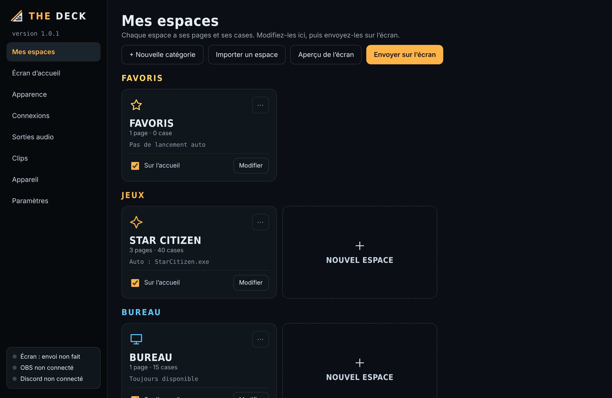
La fenêtre principale, sur la page Mes espaces.
Menu à gauche
À quoi il sert
Mes espaces
Vos espaces (Star Citizen, Bureau, Stream, Discord, Spotify…), rangés par catégorie. On les crée, on les modifie, on les range.
Écran d’accueil
Les espaces affichés sur l’accueil du Deck et leur ordre.
Apparence
Le fond de l’écran et les couleurs des cases.
Connexions
La liaison avec OBS et avec Discord.
Appareil
La luminosité, la mise en veille et le glissement entre les pages de l’écran.
Paramètres
Le lancement avec Windows, la version et les sauvegardes.
En bas à gauche, trois pastilles indiquent l’état de l’écran (relié en USB, à jour), d’OBS et de Discord. Elles deviennent bleues quand tout est connecté.
3Mes espaces et les catégories
Un espace correspond à un jeu ou à un usage. Il contient une ou plusieurs pages de 15 cases. Les espaces sont rangés par catégorie : Jeux, Bureau, Streaming, Discord, Spotify, plus celles que vous créez.
Créer un espace
Dans Mes espaces, cliquez sur Nouvel espace dans la catégorie voulue.
Choisissez un modèle tout prêt (Star Citizen, Elite Dangerous, Flight Simulator, raccourcis Windows, OBS…) ou une grille vide.
Donnez-lui un nom. Pour un jeu, vous pouvez indiquer son programme (par exemple StarCitizen.exe) : l’espace s’ouvrira tout seul quand le jeu démarre.
Cliquez sur Créer l’espace.
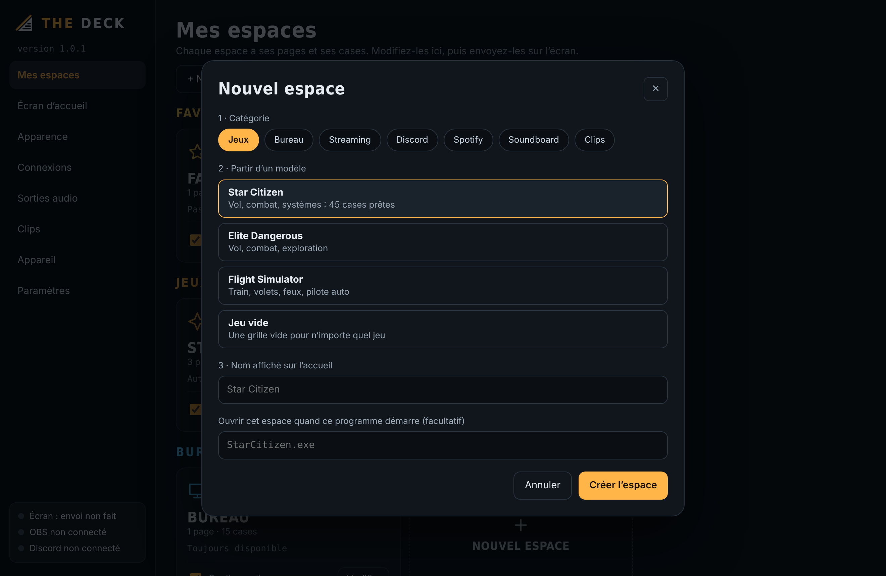
Choix de la catégorie, du modèle et du nom.
Créer une catégorie
Cliquez sur + Nouvelle catégorie, en haut de Mes espaces. Donnez-lui un nom, une couleur et un pictogramme, puis créez son premier espace. Vos catégories ont des boutons Modifier et Supprimer. Une catégorie ne se supprime que si elle est vide.
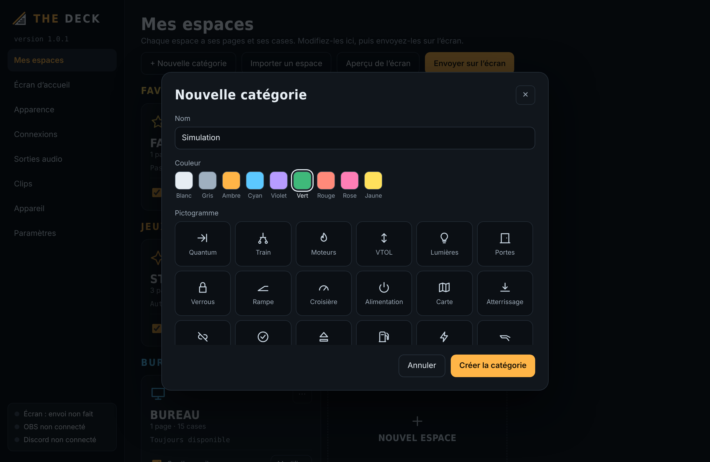
Une catégorie « Simulation » en vert.
Le menu ⋯ d’un espace
Renommer et Dupliquer.
Changer de catégorie… : déplace l’espace dans une autre catégorie.
Exporter… : enregistre l’espace dans un fichier .deck pour le garder ou le partager. Le bouton Importer un espace fait l’inverse.
Supprimer.
La case Sur l’accueil de chaque carte affiche ou masque l’espace sur l’écran d’accueil du Deck.
4Régler une page et ses cases
Cliquez sur Modifier sur un espace. La grille de 15 cases s’affiche à gauche, et les réglages de la case choisie à droite.
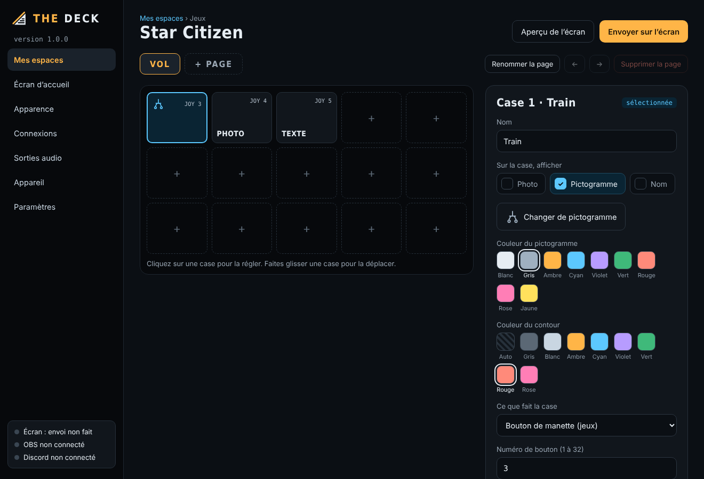
Les réglages d’une case : nom, ce qui s’affiche (photo, pictogramme, nom), couleurs, puis ce que fait la case.
Les pages
Les onglets au-dessus de la grille sont les pages (VOL, COMBAT, SYSTÈMES…). + PAGE en ajoute une. À droite, vous pouvez renommer la page, la déplacer avec les flèches ou la supprimer.
Une case
Cliquez sur une case, ou sur une case vide + pour en créer une.
Nom : le texte de la case.
Sur la case, afficher : cochez librement Photo, Pictogramme et Nom. Toutes les combinaisons sont possibles : photo seule, photo + nom, photo + pictogramme, photo + pictogramme + nom, pictogramme + nom, ou nom seul (écrit en grand). La photo vient de votre PC et se recadre dans le logiciel.
Couleur du contour : « Auto » suit l’apparence, ou choisissez une couleur (gris, blanc, ambre, cyan, violet, vert, rouge, rose).
Ce que fait la case : voir le tableau ci-dessous.
Comportement : Appui (une pression), Maintenir (il faut garder le doigt posé, utile contre les fausses manœuvres) ou Bascule (la case reste allumée jusqu’au prochain appui).
Action
Ce qu’elle fait
Bouton de manette (jeux)
L’écran se comporte comme une manette de 32 boutons. Dans le jeu, ouvrez les contrôles, cliquez sur l’action voulue, puis touchez la case.
Touche ou raccourci clavier
Cliquez dans le champ et tapez la combinaison (par exemple Ctrl+C).
Touche multimédia
Volume, muet, lecture/pause, piste suivante ou précédente.
Ouvrir une appli sur un écran
Voir le chapitre 5.
OBS (streaming)
Voir le chapitre 9.
Discord
Voir le chapitre 10.
Changer de page
Aller à une autre page de l’espace, ou revenir à l’accueil.
AstucesLe bouton Tester essaie tout de suite les actions faites par le PC (appli, OBS, Discord, clips). Tout est enregistré automatiquement.
Déplacer une case
Restez appuyé sur une case (souris ou doigt) : elle se soulève. Gardez appuyé, faites-la glisser, puis relâchez à la place voulue : les deux cases échangent leur place. Relâchée sur un onglet de page, elle part dans cette page, à la première place libre. Ça ne marche que dans le logiciel, pas sur l’écran du Deck.
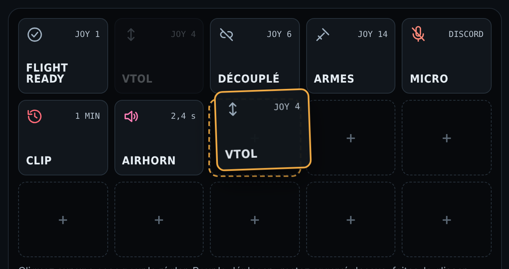
La case « VTOL » soulevée, en train d’être posée sur une autre place.
Favoris
L’espace Favoris (étoile, en premier sur l’accueil) rassemble vos cases préférées, quel que soit leur espace : une touche de Star Citizen, le micro Discord, un clip, un son de la soundboard…
Ouvrez l’espace d’origine et cliquez sur la case.
En bas de ses réglages, cliquez sur ☆ Ajouter aux favoris. Une copie va tout de suite dans Favoris, à la première place libre (une nouvelle page est créée si besoin). Le bouton devient ★ Dans les favoris ; un nouveau clic retire la copie.
Dans l’espace Favoris, rangez les cases comme vous voulez (voir « Déplacer une case »).
Bon à savoirLa copie est indépendante : si vous modifiez la case d’origine, retirez-la des favoris puis ajoutez-la à nouveau. Un son copié part toujours vers les sorties cochées sur la soundboard au moment de la copie.
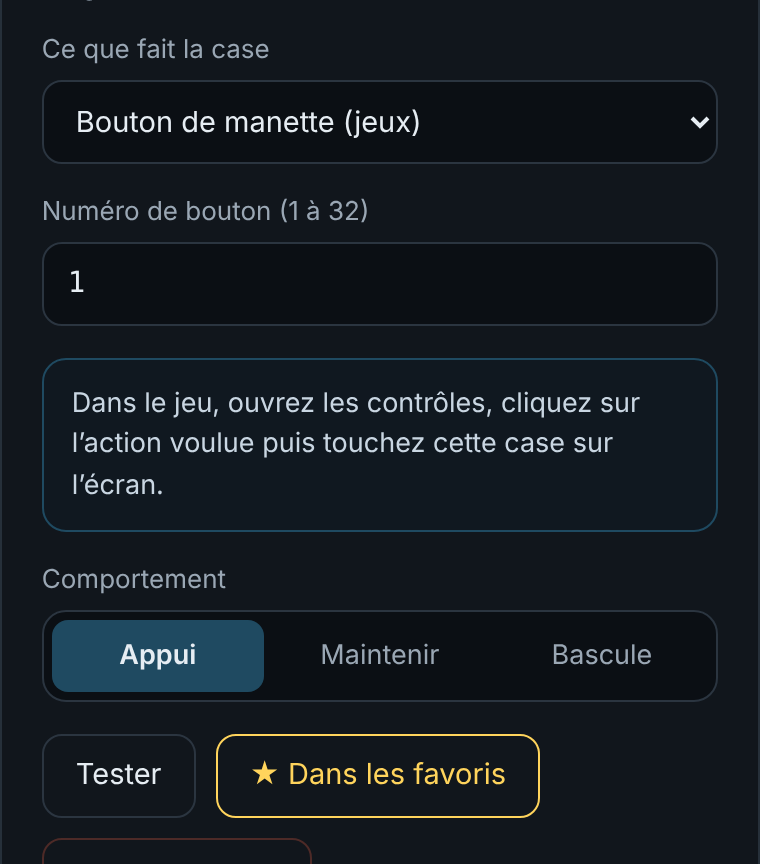
Le bouton, en bas des réglages de la case.
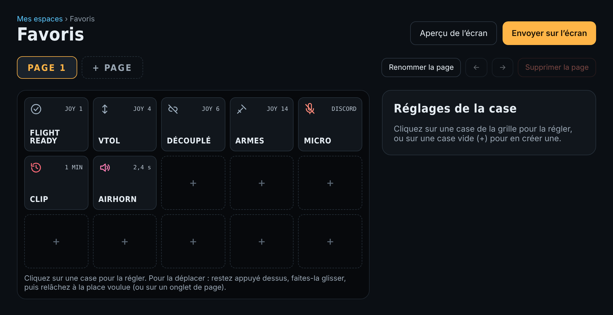
L’espace Favoris : des cases de Star Citizen, Discord, Clips et Soundboard réunies.
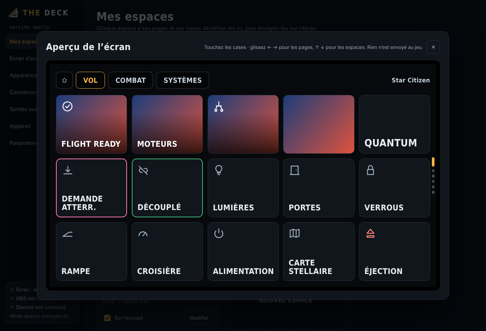
Photo + pictogramme + nom, photo + nom, photo + pictogramme, photo seule, nom seul, et deux contours de couleur (rose, vert).
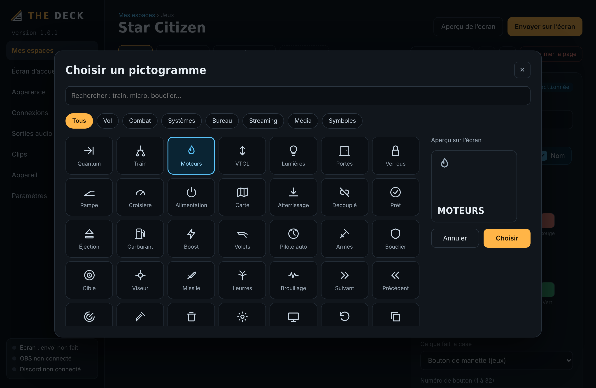
Le catalogue de pictogrammes, avec recherche et catégories.
5Ouvrir une appli sur le bon écran
Avec deux écrans, une case peut ouvrir une appli exactement où vous la voulez : par exemple le navigateur sur la moitié gauche de l’écran de gauche, et Discord sur la moitié droite.
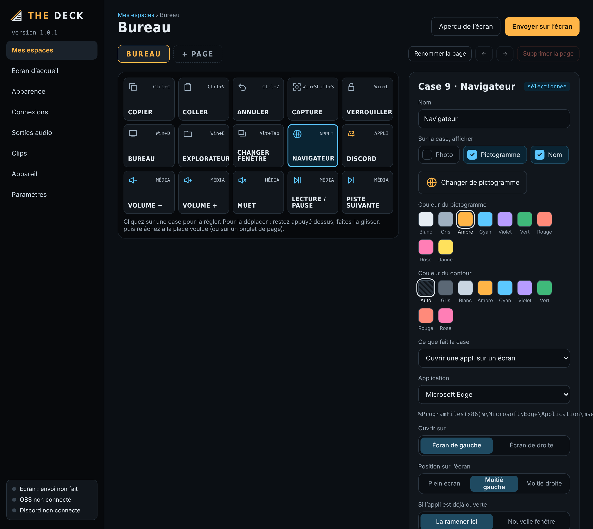
La case « Navigateur » : Microsoft Edge, écran de gauche, moitié gauche.
Dans Ce que fait la case, choisissez Ouvrir une appli sur un écran.
Choisissez l’application : Edge, Chrome, Firefox, Discord, Spotify, l’Explorateur, ou Autre programme… (bouton Choisir… pour aller chercher le fichier .exe).
Ouvrir sur : écran de gauche ou de droite.
Position : plein écran, moitié gauche ou moitié droite.
Si l’appli est déjà ouverte : la ramener à cet endroit, ou ouvrir une nouvelle fenêtre.
Cliquez sur Tester pour vérifier.
La mention « Touche réservée » (F13, Shift+F14…) est la touche invisible que l’écran envoie au logiciel pour déclencher l’action. Vous n’avez rien à régler.
6L’écran d’accueil du Deck
C’est le premier écran affiché par le Deck : une vignette par espace, et la vignette Réglages toujours en dernier.
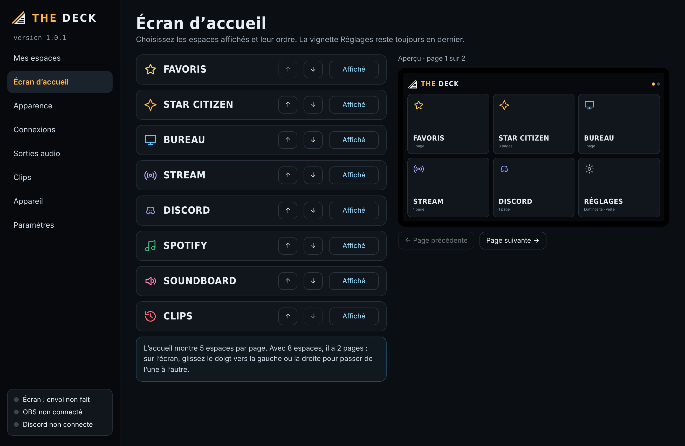
L’ordre des espaces à gauche, l’aperçu de l’accueil à droite.
Les flèches ↑ ↓ changent l’ordre.
Affiché / Masqué montre ou cache un espace sur l’accueil.
L’accueil montre 5 espaces par page. Au-delà, il passe sur plusieurs pages, avec des petits points en haut à droite qui indiquent la page.
7Changer de page et d’espace en glissant
Sur l’écran, on se déplace du bout du doigt, comme sur un téléphone.
Geste
Ce qu’il fait
Toucher la maison
Le carré en haut à gauche de chaque espace ramène à l’écran d’accueil, pour choisir Star Citizen, Discord, Spotify…
Glisser vers la gauche
Page suivante de l’espace (ou de l’accueil).
Glisser vers la droite
Page précédente.
Glisser vers le haut
Espace suivant, dans l’ordre de l’écran d’accueil : Star Citizen → Bureau → Stream → Discord → Spotify…
Glisser vers le bas
Espace précédent.
En changeant d’espace, son nom s’affiche une seconde au milieu de l’écran, et on arrive sur sa première page. Une petite colonne de points, à droite, montre où l’on est parmi les espaces.
Pour changer l’ordre des espaces, utilisez la page Écran d’accueil (chapitre 6). Seuls les espaces affichés sur l’accueil sont parcourus.
Dans l’espace Spotify, glisser à gauche ou à droite change de morceau. Glisser en haut ou en bas change d’espace, comme ailleurs.
Au bout de la liste, l’écran tremble légèrement et ne bouge pas. Dans Appareil, cochez Après la dernière page ou le dernier espace, revenir au premier pour faire le tour.
Les onglets en haut de l’écran mènent directement à une page, et le carré avec la maison, tout à gauche, ramène à l’accueil.
Une case ne s’active que si le doigt se lève sans avoir glissé : pas d’appui par erreur.
Les deux gestes peuvent être coupés séparément dans Appareil.
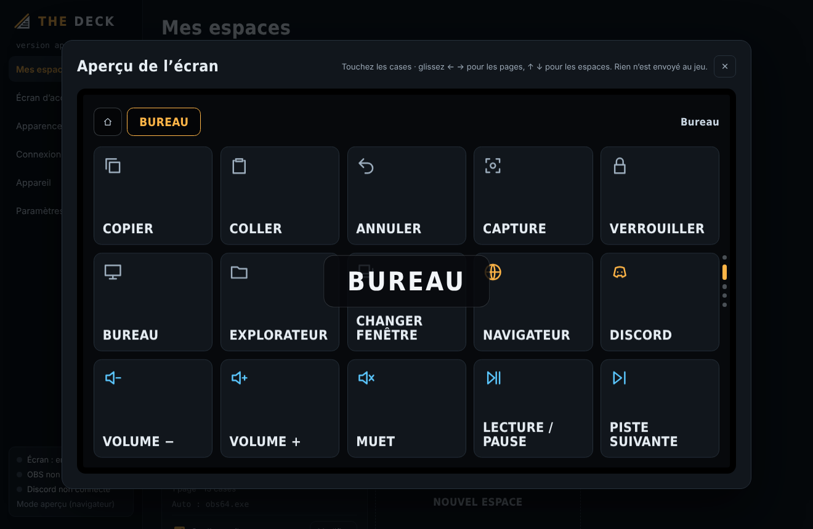
Glissement vers le haut depuis Star Citizen : on arrive sur Bureau, son nom s’affiche et le repère à droite avance d’un cran.
8Apparence : fond et couleurs
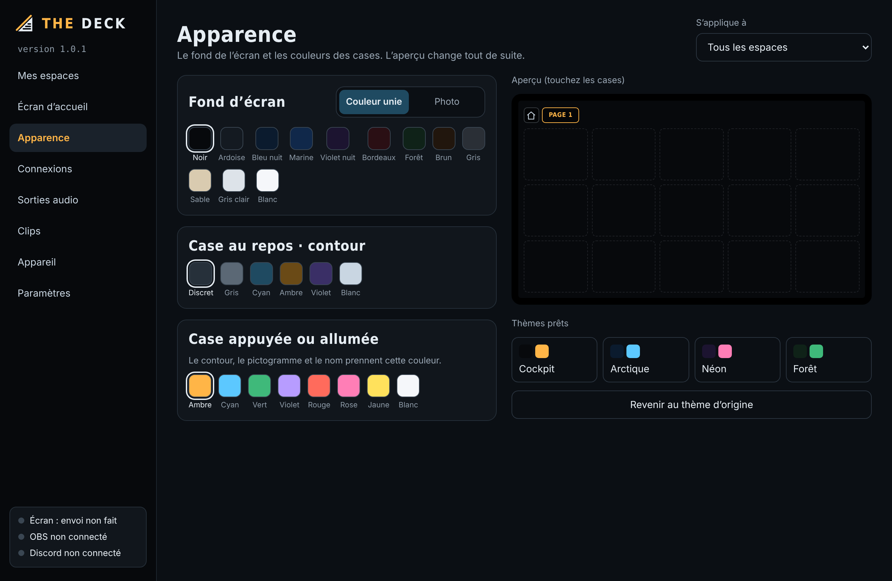
Les réglages à gauche, l’aperçu en direct à droite (touchez ses cases pour voir la couleur « appuyée »).
Fond d’écran : une couleur unie du catalogue, ou une photo de votre PC, recadrée dans le logiciel. La photo peut être assombrie pour mieux lire les cases.
Case au repos : la couleur du contour des cases.
Case appuyée ou allumée : la couleur que prennent le contour, le pictogramme et le nom quand on appuie (ambre par défaut).
Thèmes prêts : Cockpit, Arctique, Néon, Forêt.
S’applique à, en haut à droite : tous les espaces, ou un seul espace qui aura sa propre apparence.
9Streaming avec OBS
L’espace Stream pilote OBS Studio : changer de scène, couper un son, montrer ou cacher un élément, lancer le live ou l’enregistrement, sauvegarder le replay.
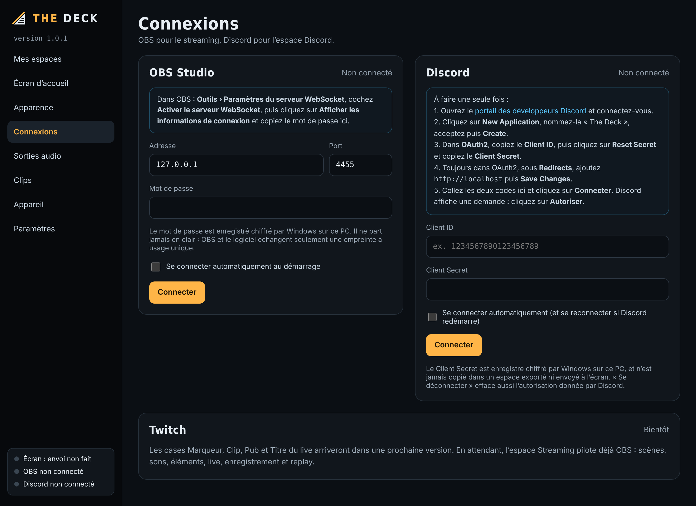
Le menu Connexions : OBS à gauche, Discord à droite.
Connecter OBS (une seule fois)
Dans OBS : Outils › Paramètres du serveur WebSocket, cochez Activer le serveur WebSocket.
Cliquez sur Afficher les informations de connexion et copiez le mot de passe.
Dans The Deck, menu Connexions : collez le mot de passe et cliquez sur Connecter. Cochez Se connecter automatiquement si vous voulez.
Une fois OBS connecté, les réglages des cases proposent directement la liste de vos scènes et de vos sources. Un nouvel espace créé avec le modèle OBS prend les vrais noms de vos scènes.
TwitchLes cases Marqueur, Clip, Pub et Titre du live arriveront dans une prochaine version.
10Discord
L’espace Discord coupe le micro, le casque ou les deux, change d’entrée et de sortie audio, et lance vos propres raccourcis Discord.
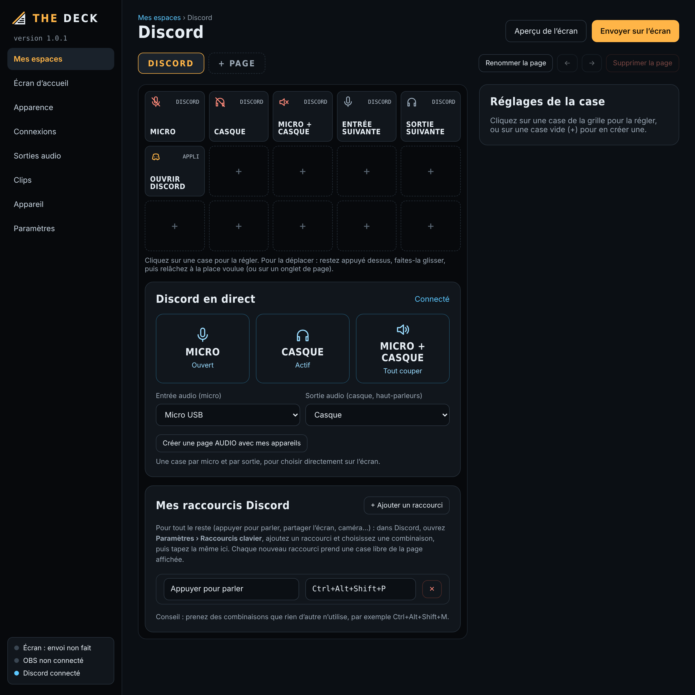
L’espace Discord : les cases en haut, les commandes en direct et vos raccourcis en dessous.
Connecter Discord (une seule fois)
Ouvrez le portail des développeurs Discord (lien dans le menu Connexions) et connectez-vous.
Cliquez sur New Application, nommez-la « The Deck », puis Create.
Dans OAuth2 : copiez le Client ID, cliquez sur Reset Secret et copiez le Client Secret.
Toujours dans OAuth2, sous Redirects, ajoutez http://localhost puis Save Changes.
Dans The Deck, menu Connexions : collez les deux codes et cliquez sur Connecter. Discord affiche une demande : cliquez sur Autoriser.
Ce que fait l’espace Discord
Micro : coupe ou rétablit le micro seul.
Casque : coupe ou rétablit le son seul. Discord ne sait pas le faire sans couper le micro, alors le logiciel met le volume de sortie de Discord à zéro, puis le remet comme avant.
Micro + casque : coupe les deux d’un coup, comme le casque barré de Discord.
Entrée suivante / Sortie suivante : passe au micro ou au casque suivant.
Les listes Entrée audio et Sortie audio choisissent l’appareil directement. Créer une page AUDIO avec mes appareils fait une case par appareil.
Vos raccourcis Discord
Pour tout le reste (appuyer pour parler, partager l’écran, caméra…) : dans Discord, ouvrez Paramètres › Raccourcis clavier, ajoutez un raccourci et choisissez une combinaison. Dans The Deck, cliquez sur + Ajouter un raccourci, donnez-lui un nom et tapez la même combinaison. Il prend tout seul une case libre de la page.
ConseilChoisissez des combinaisons que rien d’autre n’utilise, par exemple Ctrl+Alt+Shift+M.
11Spotify : le lecteur
L’espace Spotify n’a pas de cases : il s’affiche comme un lecteur de musique, avec la jaquette du morceau en grand.
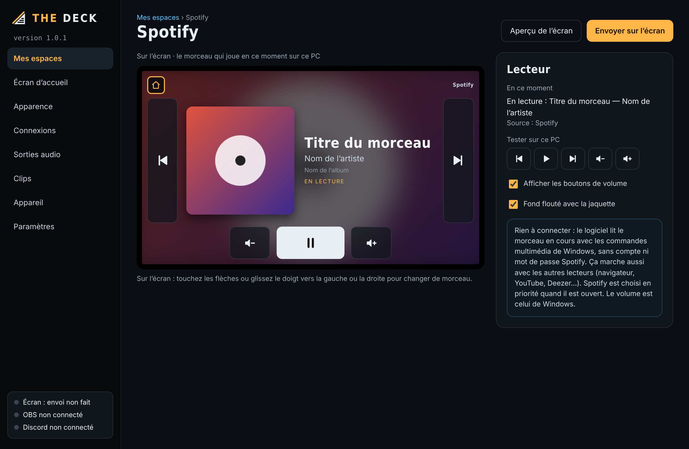
Le lecteur, avec le morceau qui joue sur le PC (image d’exemple).
La jaquette du morceau en cours, avec le titre, l’artiste, l’album et « En lecture » ou « En pause ». Elle change à chaque morceau.
La grande flèche de gauche revient au morceau précédent, celle de droite passe au suivant. On peut aussi glisser le doigt.
En bas : Volume −, lecture / pause et Volume +.
Deux options : Afficher les boutons de volume et Fond flouté avec la jaquette.
Les boutons Tester sur ce PC pilotent vraiment votre musique.
Rien à connecterLe logiciel lit le morceau en cours grâce aux commandes multimédia de Windows, sans compte ni mot de passe Spotify. Ça marche aussi avec les autres lecteurs (YouTube ou Deezer dans le navigateur…), mais Spotify passe en priorité quand il est ouvert. Le volume est celui de Windows. Quand l’écran est branché, le logiciel lui envoie la jaquette en direct.
12Soundboard
L’espace Soundboard joue vos sons. Sur l’écran, vous cochez d’abord où ils partent, dans la colonne de gauche, puis vous touchez les sons.
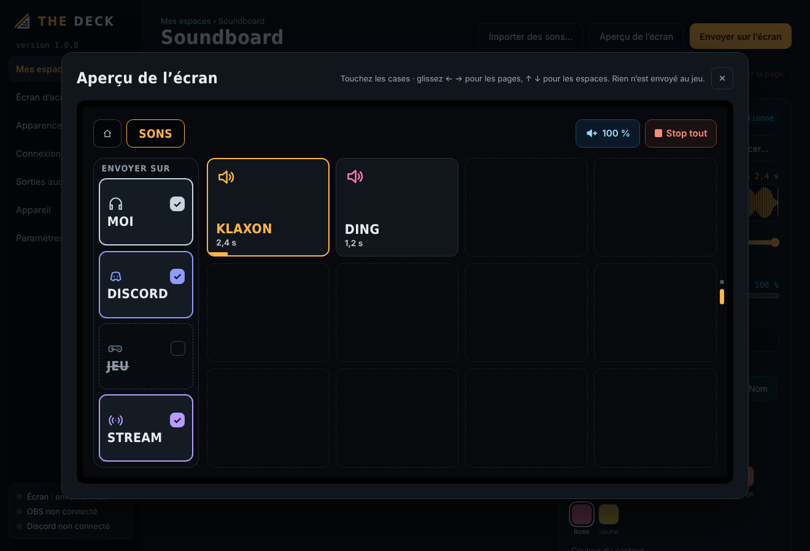
Moi, Discord et Stream sont cochés, Jeu est décoché (barré). Le son « Klaxon » est en cours de lecture.
Sortie
Qui entend le son
Moi
Vous, dans votre casque.
Discord
Vos amis en vocal sur Discord.
Jeu
Les joueurs du chat vocal du jeu.
Stream
Les spectateurs, par OBS.
Touchez une sortie pour la cocher ou la décocher, puis touchez le son. Pour ne plus envoyer sur le stream, il suffit de décocher Stream.
En haut à droite : Volume (chaque appui baisse d’un cran) et Stop tout.
12 sons par page. Glissez à gauche ou à droite pour les autres pages, comme ailleurs.
Ajouter et régler un son
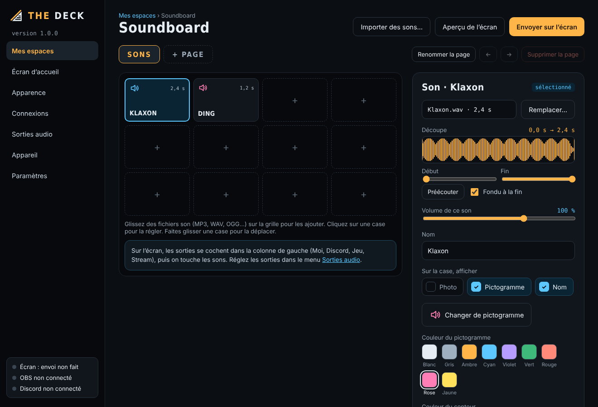
L’espace Soundboard dans le logiciel, avec le son « Klaxon » sélectionné.
Cliquez sur Importer des sons…, ou glissez des fichiers (MP3, WAV, OGG, FLAC, M4A) sur la grille. Chaque fichier devient une case. Les sons sont copiés dans le dossier du logiciel, sur votre PC.
Découpe : réglez le début et la fin du son ; la partie jouée est en ambre. Préécouter le joue dans votre casque.
Volume de ce son, et Fondu à la fin pour qu’il ne coupe pas net.
Photo, pictogramme, nom et contour, comme pour les autres cases.
Où part ce son : Selon les cases de l’écran (normal), ou Toujours les mêmes sorties (par exemple une alerte qui part toujours sur le stream).
Lecture : une fois, en boucle, ou tant qu’on appuie. Si on rappuie : arrêter, recommencer ou superposer.
Essayer tout de suiteDans Aperçu de l’écran, les sons de la soundboard sont vraiment joués sur les sorties cochées.
13Sorties audio de la soundboard
Le menu Sorties audio règle où partent les sons. L’encadré « À faire une seule fois », en haut, explique ce qu’il faut faire pour Discord et le jeu.
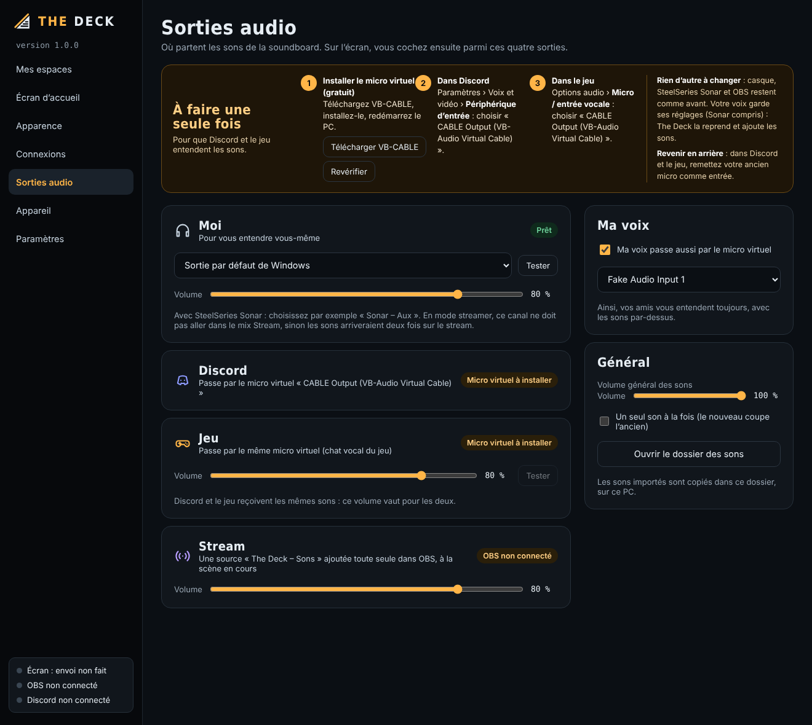
La page Sorties audio.
À faire une seule fois
Installer le micro virtuel gratuit VB-CABLE (bouton Télécharger VB-CABLE), puis redémarrer le PC et cliquer sur Revérifier. L’étape passe au vert.
Dans Discord : Paramètres › Voix et vidéo › Périphérique d’entrée : choisir « CABLE Output (VB-Audio Virtual Cable) ». Si Discord est connecté à The Deck, l’étape passe au vert toute seule.
Dans le jeu : options audio › micro ou entrée vocale : choisir « CABLE Output (VB-Audio Virtual Cable) ».
Rien d’autre à changerVotre casque, SteelSeries Sonar et OBS restent comme avant. Votre voix garde ses réglages, Sonar compris : The Deck reprend votre micro et ajoute les sons par-dessus. Pour revenir en arrière, remettez simplement votre ancien micro comme entrée dans Discord et dans le jeu.
Les réglages
Moi : la sortie où vous entendez les sons (par exemple « Sonar – Aux »), et son volume. Avec le mode streamer de Sonar, ce canal ne doit pas aller dans le mix Stream, sinon les sons arriveraient deux fois sur le stream.
Discord et Jeu passent par le même micro virtuel : ils reçoivent les mêmes sons, avec un volume commun.
Stream : The Deck ajoute tout seul une source « The Deck – Sons » dans OBS, à la scène en cours. OBS doit être connecté (chapitre 9).
Ma voix : votre vrai micro, repris dans le micro virtuel. Le micro de SteelSeries Sonar est choisi automatiquement s’il existe.
Général : volume de tous les sons, « Un seul son à la fois », et le dossier où sont rangés vos sons.
Les boutons Tester jouent un petit bip sur la sortie choisie.
14Clips : l’enregistreur intégré
The Deck a son propre enregistreur, sans OBS ni logiciel de carte graphique. Une mémoire filme en continu et ne garde que les dernières secondes. Un appui sur CLIP les enregistre dans un fichier vidéo.
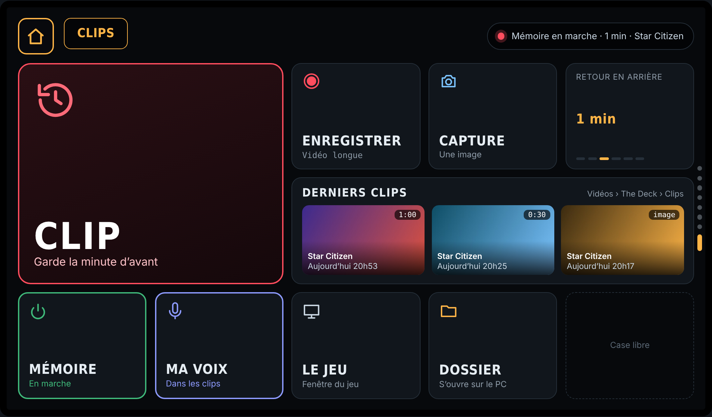
L’espace Clips sur l’écran. En haut à droite, l’état de la mémoire.
Case
Ce qu’elle fait
CLIP
Enregistre les dernières secondes (la durée du retour en arrière) dans un fichier MP4.
ENREGISTRER
Lance une vidéo longue. La case devient ARRÊTER avec un chrono ; un second appui enregistre la vidéo.
CAPTURE
Prend une image (PNG) de ce qui est filmé.
RETOUR EN ARRIÈRE
Chaque appui passe à la durée suivante : 15 s, 30 s, 1 min, 2 min, 3 min, 5 min.
DERNIERS CLIPS
Les trois derniers fichiers, avec leur durée.
MÉMOIRE
Met la mémoire en marche ou à l’arrêt (rien n’est filmé quand elle est à l’arrêt).
MA VOIX
Garde ou coupe votre micro dans les clips.
LE JEU / L’ÉCRAN
Filmer seulement la fenêtre du jeu, ou tout l’écran.
DOSSIER
Ouvre le dossier des clips sur le PC.
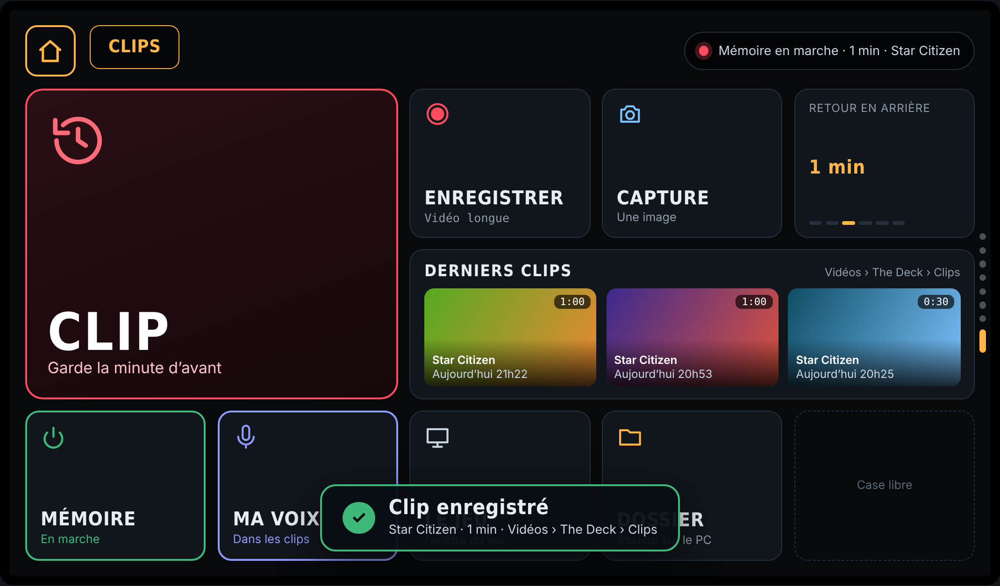
Juste après un appui sur CLIP : le bandeau vert confirme, et le clip apparaît dans « Derniers clips ».
Les fichiers vont dans Vidéos › The Deck › Clips, avec le nom du jeu, la date et l’heure : Star Citizen 2026-10-27 19h12.mp4. Les vidéos longues finissent par « (vidéo) ».
Une case Clips peut aussi aller dans n’importe quel espace (Star Citizen…) : dans « Ce que fait la case », choisissez Clips (clip, vidéo, capture), puis l’action.
Le clip contient tout le son mélangé, plus deux pistes séparées (votre voix, le son du PC) pour le montage.
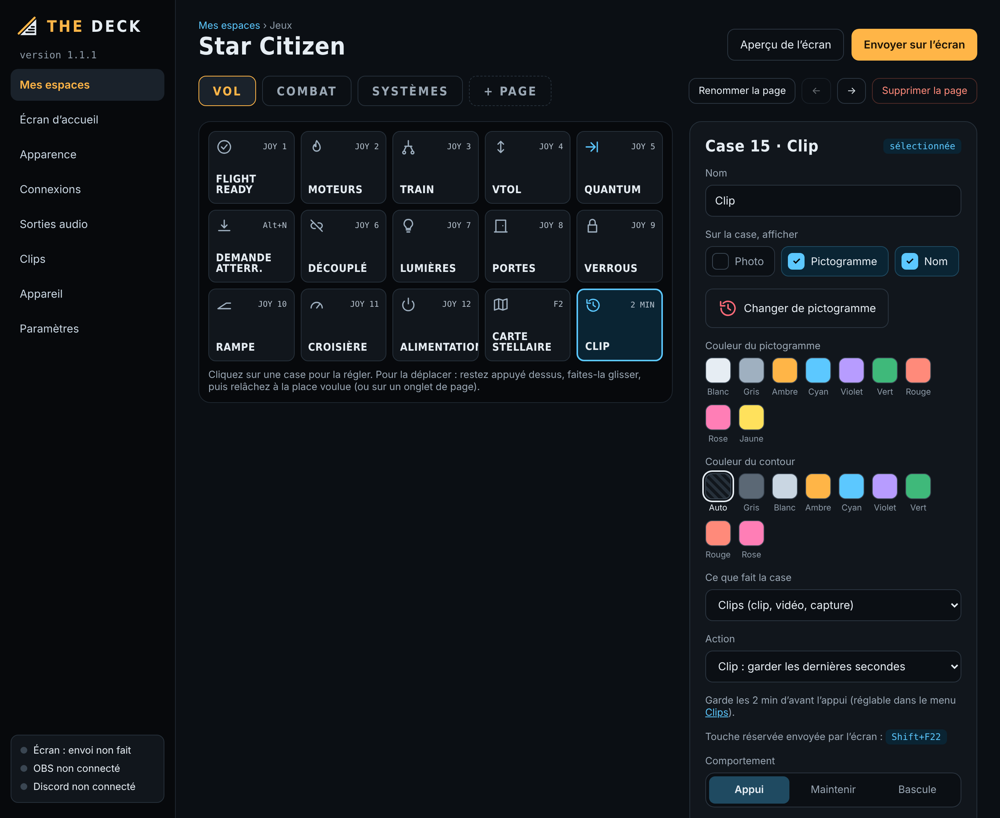
Une case CLIP ajoutée à la page VOL de Star Citizen.
Les réglages (menu Clips)
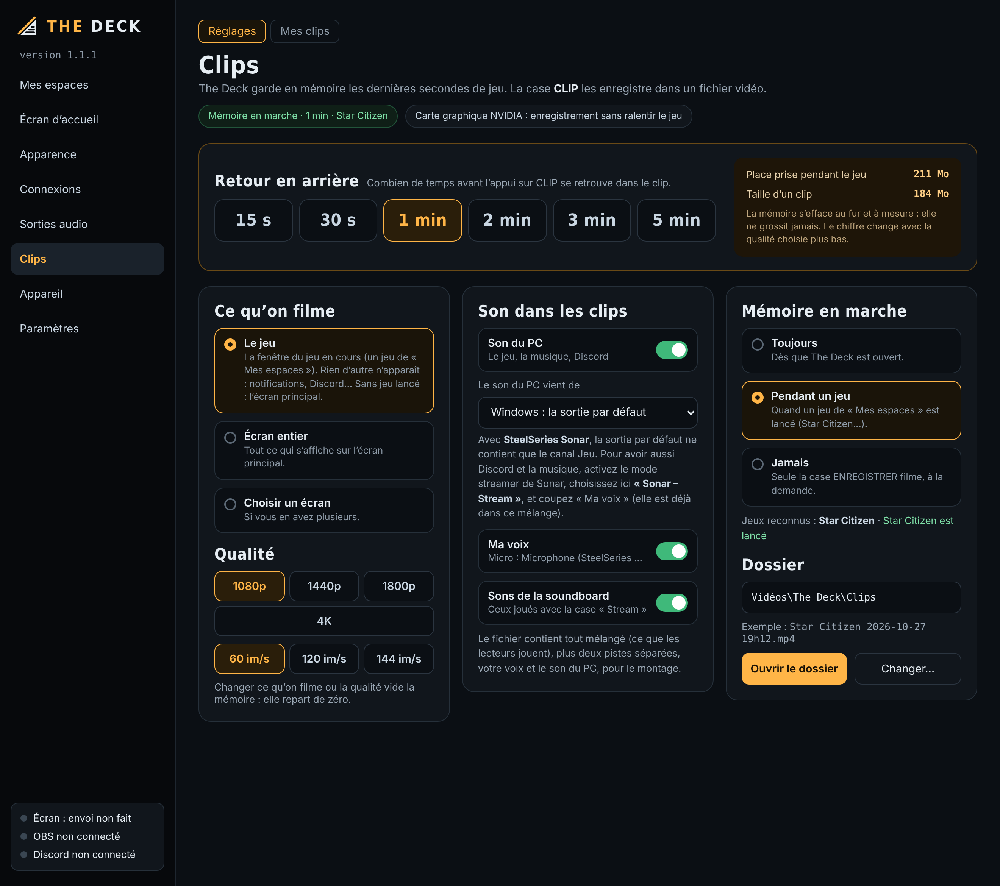
Le menu Clips, onglet Réglages.
Retour en arrière : la durée gardée par CLIP. À côté, la place prise sur le disque pendant le jeu, et la taille d’un clip. La mémoire s’efface au fur et à mesure : elle ne grossit jamais.
Ce qu’on filme : Le jeu (la fenêtre du jeu en cours, sans les notifications ni Discord ; sans jeu lancé, l’écran principal), Écran entier, ou Choisir un écran.
Qualité : 1080p, 1440p, 1800p ou 4K, à 60, 120 ou 144 images par seconde. 1800p, 4K, 120 et 144 images/s ne servent que si votre écran (et le jeu) va jusque-là ; les fichiers sont alors bien plus gros. Bon compromis pour un jeu rapide : 1440p à 144 images/s. Changer ce réglage vide la mémoire.
Son dans les clips : le son du PC, votre voix, et les sons de la soundboard joués avec la case « Stream ».
Mémoire en marche : Toujours, Pendant un jeu (quand un jeu de « Mes espaces » est lancé, d’après le programme indiqué dans l’espace), ou Jamais (seule ENREGISTRER filme).
Dossier : l’ouvrir, ou en choisir un autre.
Avec SteelSeries SonarLe son de Windows ne contient que le canal Jeu de Sonar. Pour avoir aussi Discord et la musique dans vos clips : activez le mode streamer de Sonar, choisissez « Sonar – Stream » dans « Le son du PC vient de », et coupez Ma voix (elle est déjà dans ce mélange).
Sans ralentir le jeuThe Deck enregistre avec la carte graphique (NVIDIA, AMD ou Intel), comme les logiciels de capture des fabricants. La pastille en haut du menu Clips indique celle qui est utilisée. L’outil vidéo FFmpeg (gratuit) est installé avec le logiciel.
Mes clips
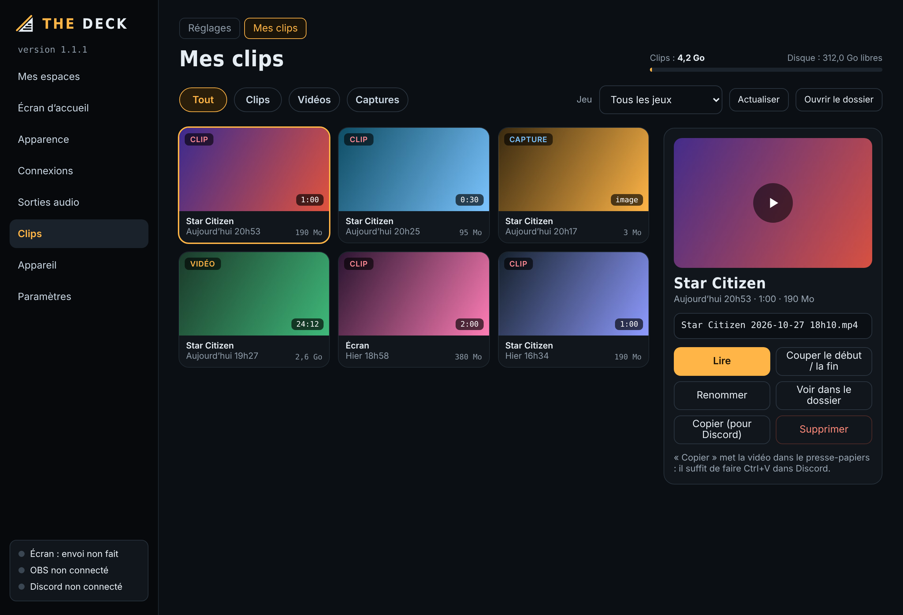
L’onglet Mes clips : tous vos clips, vidéos et captures.
En haut à droite, la place prise par vos clips et la place libre sur le disque.
Filtres Clips, Vidéos, Captures, et par jeu.
Cliquez sur un clip, puis : Lire, Couper le début / la fin (une version coupée s’ajoute, l’original est gardé), Renommer, Voir dans le dossier, Copier (pour Discord) puis Ctrl+V dans Discord, ou Supprimer (le fichier part dans la corbeille).
15Essayer avec l’aperçu de l’écran
Le bouton Aperçu de l’écran ouvre une copie de l’écran tactile dans le logiciel. On l’utilise à la souris, comme si on le touchait.
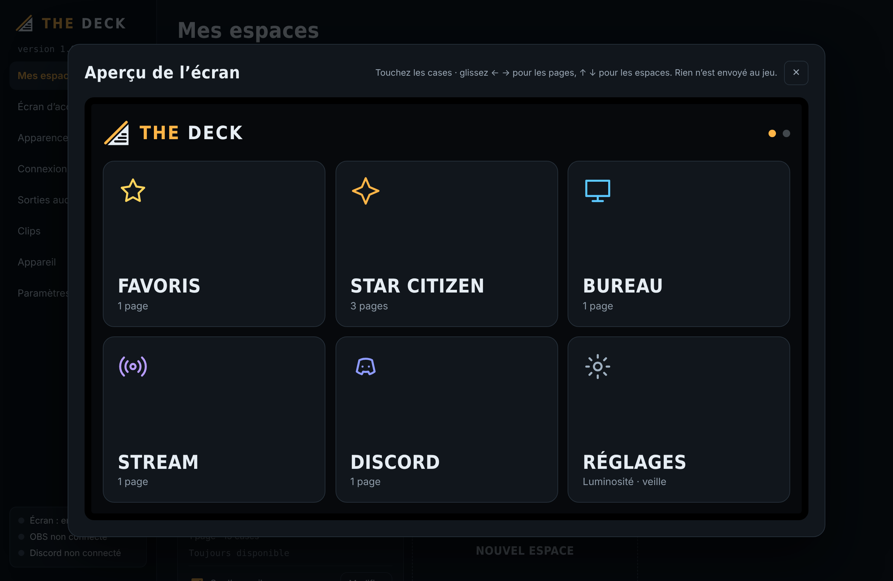
L’accueil du Deck dans l’aperçu.
Cliquez sur une vignette pour ouvrir un espace, et sur la maison pour revenir.
Cliquez sur les cases : elles s’allument, se remplissent (Maintenir) ou restent allumées (Bascule).
Cliquez, gardez le bouton enfoncé et glissez pour changer de page.
Rien n’est envoyé aux jeux. Seuls les boutons du lecteur Spotify pilotent vraiment la musique du PC.
16Envoyer sur l’écran et réglages de l’appareil
Branchez l’écran au PC avec le câble USB-C et allumez-le.
Cliquez sur Envoyer sur l’écran (en haut de Mes espaces, d’un espace ou de la page Appareil).
Le message Envoyé sur l’écran confirme l’envoi, et une sauvegarde est créée automatiquement.
Une fois relié, le logiciel reste en lien avec l’écran : il se reconnecte tout seul au démarrage et quand vous rebranchez le câble, et lui envoie la musique en cours.
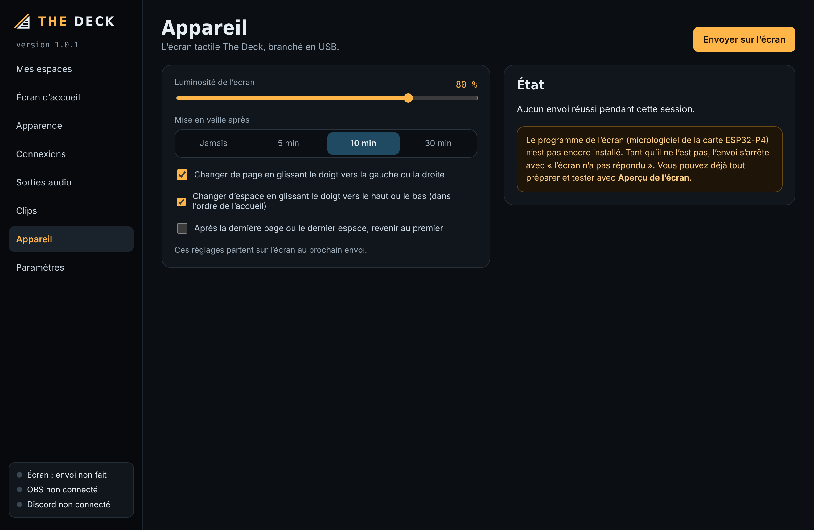
La page Appareil.
Luminosité de l’écran et mise en veille (jamais, 5, 10 ou 30 minutes).
Changer de page en glissant (gauche/droite), changer d’espace en glissant (haut/bas), et revenir au premier après le dernier.
Ces réglages partent sur l’écran au prochain envoi.
17Paramètres et sauvegardes
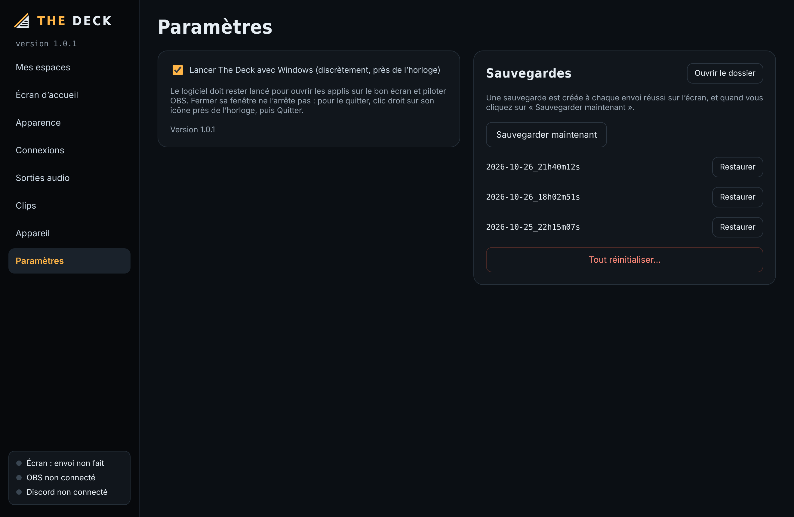
La page Paramètres.
Lancer The Deck avec Windows : le logiciel démarre discrètement près de l’horloge. Laissez-le coché pour que les applis, OBS, Discord et la musique fonctionnent depuis l’écran.
Sauvegardes : une sauvegarde est créée à chaque envoi réussi sur l’écran, et quand vous cliquez sur Sauvegarder maintenant. Les 30 dernières sont gardées. Restaurer remet une ancienne version de vos espaces.
Tout réinitialiser… remet le logiciel comme au premier jour. Une sauvegarde est faite avant.
Vos réglages sont dans le dossier %APPDATA%\The Deck (bouton Ouvrir le dossier).
18Sécurité de vos codes
The Deck ne demande jamais le mot de passe de votre compte Discord ni de votre compte Spotify.
Le mot de passe OBS, le Client Secret et l’autorisation Discord sont chiffrés par Windows : seule votre session Windows, sur ce PC, peut les relire. Copiés sur un autre ordinateur, ces fichiers sont inutilisables.
Ces codes ne sont jamais mis dans un espace exporté, ni envoyés à l’écran tactile.
Vos sons restent sur votre PC, dans le dossier du logiciel. Votre micro n’est utilisé que pour être mélangé aux sons dans le micro virtuel ; rien n’est enregistré ni envoyé sur internet.
Le logiciel ne contacte qu’un seul site internet, discord.com, en connexion chiffrée, pour obtenir l’autorisation Discord. Avec OBS, le mot de passe n’est jamais envoyé : seule une empreinte à usage unique l’est.
Se déconnecter (menu Connexions) efface l’autorisation Discord.
Bons réflexesNe collez jamais vos codes dans une conversation ou un message. Choisissez un mot de passe OBS long. En cas de doute, cliquez sur Reset Secret sur le portail des développeurs Discord : l’ancien code ne marche plus.
19Questions fréquentes
Je ne vois pas la nouveauté après une mise à jour
Vérifiez le numéro sous le logo. S’il n’a pas changé, l’ancienne version était peut-être encore ouverte près de l’horloge : clic droit sur son icône, Quitter, puis relancez The Deck.
« L’écran n’a pas répondu »
Vérifiez le câble USB-C et que l’écran est allumé. Tant que le programme de l’écran n’est pas installé, ce message est normal.
Une appli ne s’ouvre pas au bon endroit
Cliquez sur Tester dans la case. Pour un « Autre programme », renseignez le Nom du processus (par exemple chrome) si le logiciel ne trouve pas la fenêtre.
OBS ne se connecte pas
Vérifiez qu’OBS est ouvert, que le serveur WebSocket est activé et que le mot de passe est le bon. Le port par défaut est 4455.
Discord ne se connecte pas
Discord doit être lancé sur le PC. Vérifiez le Client ID, le Client Secret et l’adresse http://localhost dans Redirects. Le message affiché dans Connexions indique ce qui coince.
Le lecteur Spotify affiche « Rien en lecture »
Lancez un morceau dans Spotify. La jaquette apparaît au bout d’une seconde environ.
L’ancienne icône s’affiche encore
Windows garde parfois les icônes en mémoire. Elle se met à jour au bout d’un moment, ou après un redémarrage.